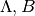

This document describes in detail how to subclass and define a custom spherical coordinate system, as mentioned in Designing Coordinate Systems and the docstring for SphericalCoordinatesBase. In this example, we will define a coordinate system defined by the plane of orbit of the Sagitarrius Dwarf Galaxy (hereafter Sgr; as defined in Majewski et al. 2003). The Sgr coordinate system is often referred to in terms of two angular coordinates, .
We’ll start by using a template to generate a descriptive docstring for our subclass. Then we’ll add some glue to the default initializer to recognize that we want to call the coordinates Lambda and Beta. Then we have to define the transformation from this coordinate system to some other built-in system, in this case we will use spherical Galactic Coordinates as defined in GalacticCoordinates.
The first step is to create a new class for our coordinates, let’s call it SgrCoordinates and make it a subclass of SphericalCoordinatesBase:
import astropy.coordinates as coord
class SgrCoordinates(coord.SphericalCoordinatesBase):
""" A spherical coordinate system defined by the orbit of the
Sagittarius dwarf galaxy, as described in
http://adsabs.harvard.edu/abs/2003ApJ...599.1082M
and further explained in
http://www.astro.virginia.edu/~srm4n/Sgr/.
"""
We can use some convenience variables defined at the superclass level to generate a descriptive docstring for our subclass:
__doc__ = __doc__.format(params=coord.SphericalCoordinatesBase.
_init_docstring_param_templ.
format(lonnm='Lambda', latnm='Beta'))
This may look scary, but let’s break down what it is doing. __doc__ is a class attribute defined in the superclass, SphericalCoordinatesBase, and is just a string with a placeholder for a docstring specific to this subclass. We specify that extra, descriptive text by using format() with the params keyword. params expects a string describing the variable names of our current coordinate system. We can generate this from a template as well by formatting another class attribute and telling it what we want to name our coordinates (in this case, Lambda and Beta). The template string is defined as a class attribute _init_docstring_param_templ, and expects the name of the longitude-equivalent (Lambda) and latitude-equivalent (Beta) coordinates:
coord.SphericalCoordinatesBase._init_docstring_param_templ
.format(lonnm='Lambda', latnm='Beta')
If this looks strange or complicated, just remember that we’re just doing this to help the user (this will provide them with a nice docstring if they look at the help for this class). The bottom line: if you want to define a custom spherical coordinate system with two angular coordinates, copy and paste the below line into the class definition and change 'Lambda' to the name of your longitude coordinate, and 'Beta' to the name of your latitude coordinate.:
__doc__ = __doc__.format(params=coord.SphericalCoordinatesBase.
_init_docstring_param_templ.
format(lonnm='Lambda', latnm='Beta'))
Next we can define our subclass’ initializer, __init__(). We start by calling __init__() on the superclass. Then, we add a catch to see if the user passed in another SphericalCoordinatesBase object in. If so, we can just transform those coordinates to SgrCoordinates and copy the attributes directly. Otherwise, we have to tell our subclass how to parse the arguments and keyword arguments that the user passed in. We do this with the _initialize_latlon() classmethod. This convenience function accepts the name of the longitude coordinate, the name of the latitude coordinate, a boolean parameter to specify whether to use RA and Dec objects to store the angles internally, or to use Angle objects instead (we want to use Angle s so we set it to False), the arguments and keyword arguments passed to this initializer, and finally an optional parameter to specify the bounds of the coordinate system. This function will handle parsing the args and kwargs to validate and sanitize the input from the user.:
def __init__(self, *args, **kwargs):
super(SgrCoordinates, self).__init__()
if len(args) == 1 and len(kwargs) == 0 and
isinstance(args[0], coord.SphericalCoordinatesBase):
newcoord = args[0].transform_to(self.__class__)
self.Lambda = newcoord.Lambda
self.Beta = newcoord.Beta
self._distance = newcoord._distance
else:
super(SgrCoordinates, self).
_initialize_latlon('Lambda', 'Beta', False, args, kwargs,
anglebounds=((0, 360), (-90,90)))
Next we have to tell the class what to use for the longitude and latitude when doing coordinate transformations with other coordinate systems. Calling _initialize_latlon() will define attributes for the names of our coordinates, in this case Lambda and Beta, so we just have to create two properties lonangle and latangle that reference the others:
@property
def lonangle(self):
return self.Lambda
@property
def latangle(self):
return self.Beta
Now our coordinate system is set up! You can now create SgrCoordinates objects by passing any valid specifiers accepted by SphericalCoordinatesBase, but you won’t be able to transform to and from any other coordinate systems because we haven’t yet defined how to do that.
We will define the coordinate transformation as a function that accepts a GalacticCoordinates object and returns an SgrCoordinates object. We could alternatively define the transformation by specifying a transformation matrix ( static_transform_matrix), but in this case the transformation is from a left-handed coordinate system to a right- handed system, so we need more control over the transformation. We’ll start by constructing the rotation matrix, using the helper function astropy.coordinates.angles.rotation_matrix
# Define the Euler angles (from Law & Majewski 2010)
phi = radians(180+3.75)
theta = radians(90-13.46)
psi = radians(180+14.111534)
# Generate the rotation matrix using the x-convention (see Goldstein)
D = rotation_matrix(phi, "z", degrees=False)
C = rotation_matrix(theta, "x", degrees=False)
B = rotation_matrix(psi, "z", degrees=False)
sgr_matrix = np.array(B.dot(C).dot(D))
This is done at the module level, since it will be used by both the transformation from Sgr to Galactic as well as the inverse from Galactic to Sgr. Now we can define our first transformation function:
@transformations.transform_function(coord.GalacticCoordinates,
SgrCoordinates)
def galactic_to_sgr(galactic_coord):
""" Compute the transformation from Galactic spherical to Sgr
coordinates.
"""
l = galactic_coord.l.radians
b = galactic_coord.b.radians
X = cos(b)*cos(l)
Y = cos(b)*sin(l)
Z = sin(b)
# Calculate X,Y,Z,distance in the Sgr system
Xs, Ys, Zs = rotation_matrix.dot(np.array([X, Y, Z]))
Zs = -Zs # left-handed to right-handed
# Calculate the angular coordinates lambda,beta
Lambda = degrees(np.arctan2(Ys,Xs))
if Lambda < 0:
Lambda += 360
Beta = degrees(np.arcsin(Zs/np.sqrt(Xs*Xs+Ys*Ys+Zs*Zs)))
return SgrCoordinates(Lambda, Beta, distance=galactic_coord.distance,
unit=(u.degree, u.degree))
The decorator @transformations.transform_function(coord.GalacticCoordinates, SgrCoordinates) registers this function with the Coordinates subpackage as a transformation. Inside the function, we simply follow the same procedure as detailed by David Law’s transformation code. Note that in this case, both coordinate systems are heliocentric, so we can simply copy any distance from the GalacticCoordinates object.
We then register the inverse transformation by using the Transpose of the rotation matrix:
@transformations.transform_function(SgrCoordinates,
coord.GalacticCoordinates)
def sgr_to_galactic(sgr_coord):
L = sgr_coord.Lambda.radians
B = sgr_coord.Beta.radians
Xs = cos(B)*cos(L)
Ys = cos(B)*sin(L)
Zs = sin(B)
Zs = -Zs
X, Y, Z = rotation_matrix.T.dot(np.array([Xs, Ys, Zs]))
l = degrees(np.arctan2(Y,X))
b = degrees(np.arcsin(Z/np.sqrt(X*X+Y*Y+Z*Z)))
if l<0:
l += 360
return coord.GalacticCoordinates(l, b, distance=sgr_coord.distance,
unit=(u.degree, u.degree))
Now that we’ve registered these transformations between SgrCoordinates and GalacticCoordinates, we can transform between any coordinate system and SgrCoordinates (as long as the other system has a path to transform to GalacticCoordinates). For example, to transform from ICRS coordinates to SgrCoordinates, we simply:
>>> import astropy.coordinates as coord
>>> icrs = coord.ICRSCoordinates(280.161732, 11.91934, unit=(u.degree,u.degree))
>>> icrs.transform_to(SgrCoordinates)
<SgrCoordinates Lambda=346.81827 deg, Beta=-39.28367 deg>
The complete code for the above example is included below for reference.
1 2 3 4 5 6 7 8 9 10 11 12 13 14 15 16 17 18 19 20 21 22 23 24 25 26 27 28 29 30 31 32 33 34 35 36 37 38 39 40 41 42 43 44 45 46 47 48 49 50 51 52 53 54 55 56 57 58 59 60 61 62 63 64 65 66 67 68 69 70 71 72 73 74 75 76 77 78 79 80 81 82 83 84 85 86 87 88 89 90 91 92 93 94 95 96 97 98 99 100 101 102 103 104 105 106 107 108 109 110 111 112 113 114 115 116 117 118 119 120 121 122 123 124 125 126 127 128 129 130 131 132 133 134 135 136 | # coding: utf-8
""" Astropy coordinate class for the Sagittarius coordinate system """
from __future__ import division, print_function
__author__ = "adrn <adrn@astro.columbia.edu>"
# Standard library
import os, sys
# Third-party
import numpy as np
from numpy import radians, degrees, cos, sin
import astropy.coordinates as coord
import astropy.units as u
from astropy.coordinates import transformations
from astropy.coordinates.angles import rotation_matrix
__all__ = ["SgrCoordinates"]
class SgrCoordinates(coord.SphericalCoordinatesBase):
""" A spherical coordinate system defined by the orbit of the Sagittarius
dwarf galaxy, as described in
http://adsabs.harvard.edu/abs/2003ApJ...599.1082M
and further explained in
http://www.astro.virginia.edu/~srm4n/Sgr/.
"""
__doc__ = __doc__.format(params=coord.SphericalCoordinatesBase. \
_init_docstring_param_templ. \
format(lonnm='Lambda', latnm='Beta'))
def __init__(self, *args, **kwargs):
super(SgrCoordinates, self).__init__()
if len(args) == 1 and len(kwargs) == 0 and \
isinstance(args[0], coord.SphericalCoordinatesBase):
newcoord = args[0].transform_to(self.__class__)
self.Lambda = newcoord.Lambda
self.Beta = newcoord.Beta
self._distance = newcoord._distance
else:
super(SgrCoordinates, self).\
_initialize_latlon('Lambda', 'Beta', False, args, kwargs,
anglebounds=((0, 360), (-90,90)))
def __repr__(self):
if self.distance is not None:
diststr = ', Distance={0:.2g} {1!s}'.format(self.distance._value,
self.distance._unit)
else:
diststr = ''
msg = "<{0} Lambda={1:.5f} deg, Beta={2:.5f} deg{3}>"
return msg.format(self.__class__.__name__, self.Lambda.degrees,
self.Beta.degrees, diststr)
@property
def lonangle(self):
return self.Lambda
@property
def latangle(self):
return self.Beta
# Define the Euler angles (from Law & Majewski 2010)
phi = radians(180+3.75)
theta = radians(90-13.46)
psi = radians(180+14.111534)
# Generate the rotation matrix using the x-convention (see Goldstein)
D = rotation_matrix(phi, "z", degrees=False)
C = rotation_matrix(theta, "x", degrees=False)
B = rotation_matrix(psi, "z", degrees=False)
sgr_matrix = np.array(B.dot(C).dot(D))
# Galactic to Sgr coordinates
@transformations.transform_function(coord.GalacticCoordinates, SgrCoordinates)
def galactic_to_sgr(galactic_coord):
""" Compute the transformation from Galactic spherical to Sgr coordinates.
"""
l = galactic_coord.l.radians
b = galactic_coord.b.radians
X = cos(b)*cos(l)
Y = cos(b)*sin(l)
Z = sin(b)
# Calculate X,Y,Z,distance in the Sgr system
Xs, Ys, Zs = sgr_matrix.dot(np.array([X, Y, Z]))
Zs = -Zs
# Calculate the angular coordinates lambda,beta
Lambda = degrees(np.arctan2(Ys,Xs))
if Lambda<0:
Lambda += 360
Beta = degrees(np.arcsin(Zs/np.sqrt(Xs*Xs+Ys*Ys+Zs*Zs)))
return SgrCoordinates(Lambda, Beta, distance=galactic_coord.distance,
unit=(u.degree, u.degree))
@transformations.transform_function(SgrCoordinates, coord.GalacticCoordinates)
def sgr_to_galactic(sgr_coord):
""" Compute the transformation from Sgr coordinates to spherical Galactic.
"""
L = sgr_coord.Lambda.radians
B = sgr_coord.Beta.radians
Xs = cos(B)*cos(L)
Ys = cos(B)*sin(L)
Zs = sin(B)
Zs = -Zs
X, Y, Z = sgr_matrix.T.dot(np.array([Xs, Ys, Zs]))
l = degrees(np.arctan2(Y,X))
b = degrees(np.arcsin(Z/np.sqrt(X*X+Y*Y+Z*Z)))
if l<0:
l += 360
return coord.GalacticCoordinates(l, b, distance=sgr_coord.distance,
unit=(u.degree, u.degree))
if __name__ == "__main__":
# Example use case for our newly defined coordinate class
ra_dec = coord.ICRSCoordinates(152.88572, 11.57281, unit=(u.degree,
u.degree))
sgr = ra_dec.transform_to(SgrCoordinates)
print(sgr)
|